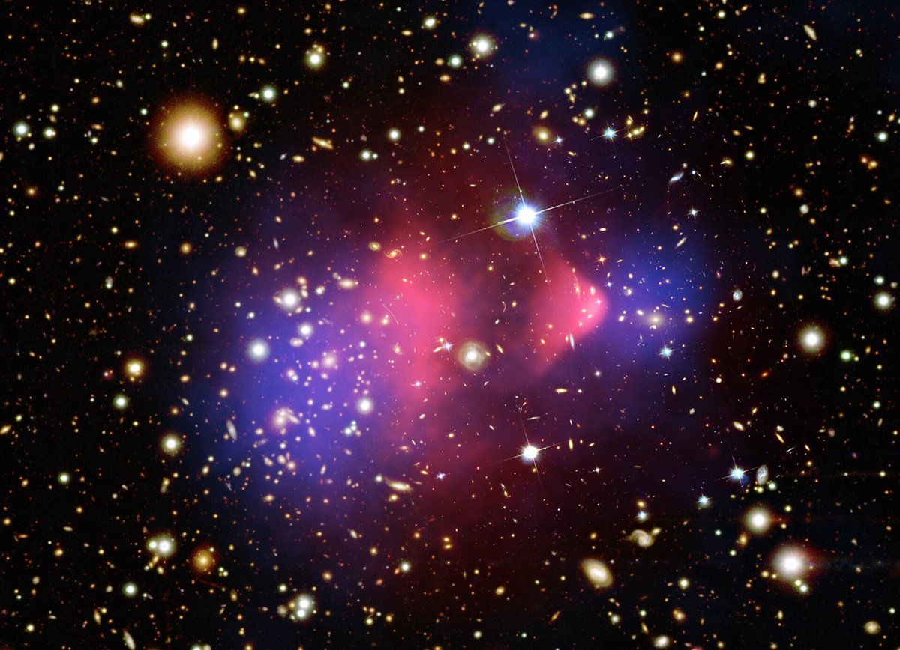
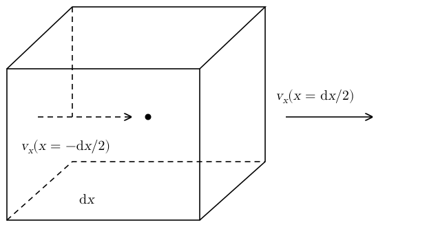
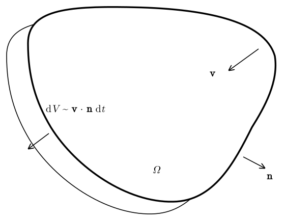
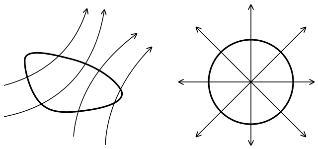
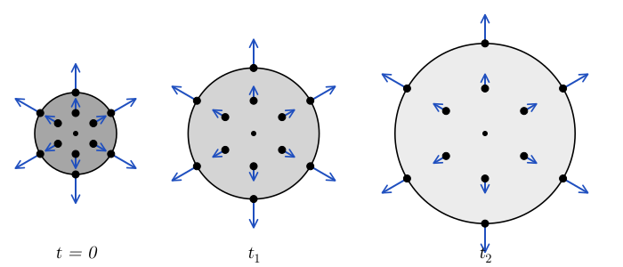

1 Fluids as Continua
1.1 Fluid elements
Astrophysical systems contain very large numbers of elementary particles. However, for most applications, we are only interested in the dynamics of the gas or plasma on scales that are large compared to the typical length scale of interaction between its constituent particles. In this context, it is convenient to treat matter as a continuum. That is, instead of keeping track of the momentum and position of each particle in the system, we describe it using equations for the evolution of macroscopic, average quantities.
We imagine matter as being composed of fluid elements. These are parcels of gas, or plasma, that have a characteristic size that is much smaller than the scales in which we are interested, but that still contain a large enough number of fluid constituents, molecules, or ions, so that it makes sense to talk about their properties, such as temperature. In other words, we require a fluid element \(\mathcal{V}\) to be a parcel of matter that can be considered to be in thermodynamic equilibrium. We will call fluid a system that is composed of fluid elements. As we will see later, the equations of motion for fluids do not explicitly depend on the size or shape of the fluid elements, so we will not attempt to define them more precisely. The only requirement is that fluid elements should exist. We will also discuss later what happens when the concept of fluid element breaks down. For the moment, we will assume that the system we are studying can be decomposed in fluid elements and we will derive equations of motion for these fluid elements.
How large should a fluid element be? The particles in a fluid element need to collide with each other frequently, so that they can exchange energy and momentum and reach thermodynamic equilibrium. The average distance traveled by a particle between two collisions is called the mean free path \[ \lambda = \frac{1}{n \sigma}, \tag{1.1}\] where \(n\) is the number density (Equation 1.3) and \(\sigma\) is the cross section for collisions. Fluid elements need to be much larger than \(\lambda\), but also much smaller than the length scale \(L\) over which the properties of the system change. This is possible only if \[ \lambda \ll L . \tag{1.2}\] The ratio \(\lambda / L\) is called the Knudsen number. In other words, the fluid approximation requires the Knudsen number to be small.
For plasmas, the mean free path does not tell the whole story. Magnetic fields force charged particles to gyrate around the field lines, so they cannot drift freely across the field lines even in the absence of collisions. For this reason, plasmas can sometimes be treated as fluids even when \(\lambda\) is large. We will come back to this point in Chapter 21.
We define the number density of a fluid element \(\mathcal{V}\) to be \[ n = \frac{\text{``number of particles in $\mathcal{V}$''}}{\text{``volume of $\mathcal{V}$''}} \qquad [\mathrm{m}^{- 3}] . \tag{1.3}\] As the system evolves, the number of particles inside the volume element \(\mathcal{V}\) remains constant, but the size of the volume changes, so \(n\) depends on the fluid element and on time.
An associated concept is that of the mass density (or simply density) \[ \rho = \frac{\text{``mass contained in $\mathcal{V}$''}}{\text{``volume of $\mathcal{V}$''}} \qquad [\mathrm{kg} \, \mathrm{m}^{- 3}] . \tag{1.4}\] We use SI units in these notes, but we follow the astrophysical custom of quoting number densities in \(\mathrm{cm^{-3}}\) and mass densities in \(\mathrm{g\,cm^{-3}}\), with \(1\,\mathrm{cm^{-3}} = 10^6\,\mathrm{m^{-3}}\) and \(1\,\mathrm{g\,cm^{-3}} = 10^3\,\mathrm{kg\,m^{-3}}\). Note that we always convert them to SI before we use them in a formula. If the gas is composed of identical particles of mass \(m\), then \(\rho = mn\). For mixtures with many constituents \[ \rho = \sum_{i = 1}^N m_i n_i = \sum_{i = 1}^N m_i Y_i n = \mu m_u n, \tag{1.5}\] where we have introduced the particle number fractions \(Y_i = n_i / n\), the atomic mass unit \(m_u \approx 1.66 \times 10^{-27}\,\mathrm{kg}\), and the mean molecular weight \[ \mu = \sum_{i = 1}^N Y_i \frac{m_i}{m_u} , \tag{1.6}\] which is the average mass of the particles in units of \(m_u\). Note that \(\mu\) is dimensionless. For example, \(\mu \approx 1\) for atomic hydrogen, while \(\mu \approx 1/2\) for fully ionized hydrogen, since there are one proton and one electron per atom. We can also decompose \(\rho\) in terms of the mass densities of the different species \(\rho_i = m_i n_i\): \[ \rho = \sum_{i = 1}^N \rho_i = \sum_{i = 1}^N X_i \rho . \tag{1.7}\] The \(X_i = \rho_i / \rho\) are the mass fractions. \(Y_i\) measures the relative contribution of each species to the number density, while \(X_i\) measures the relative contribution to the mass density. In general, \(X_i \neq Y_i\), unless all particle species have the same mass.
We also assume that each element has a well-defined velocity \[ \mathbf{v}= \text{``velocity of $\mathcal{V}$''} \qquad [\mathrm{m} \, \mathrm{s}^{- 1}] \tag{1.8}\] and temperature \[ T = \text{``temperature of $\mathcal{V}$''} \qquad [\mathrm{K}] . \tag{1.9}\] With these definitions in place, we are now ready to state explicitly the assumptions that we are making when we treat a gas or a plasma as a fluid. Consider region \(\mathcal{R}\) filled with matter. We say that this system can be treated as a fluid if the following assumption holds.
Assumption 1.1 (Fluid assumption) Every point \(P \in \mathcal{R}\) belongs to one fluid element, with given values of density \(\rho\), composition \(\{ Y_i \}\), velocity \(\mathbf{v}\), and temperature \(T\).
This assumption tells us that it makes sense to say that there is a single value of density, temperature, and velocity at each point. This assumption is violated, for example, in systems in which different particle species move independently. Such systems can sometimes be described as multi-fluids, that is systems in which there are different kinds of fluid elements that interact with each other. Plasmas in weakly collisional regimes can sometimes be treated as multi-fluids. A gas of photons in vacuum, instead, cannot be treated as a (multi-)fluid, since at each point in space there are photons traveling in infinitely many different directions.
The assumption also implies that sufficiently small parcels of material are in thermodynamic equilibrium, so that fluid elements have a well defined temperature. This is also called local thermodynamic equilibrium (LTE) condition. This condition is violated in some impulsive phenomena, such as in shock waves. Violations of LTE can sometimes be included in the fluid model. We will see two examples later: the effect of viscosity and heat conduction and the treatment of shocks. In other cases, it is necessary to describe non-LTE effects using a combination of fluid and non-fluid models. For example, to simulate the effect of cosmic rays on the dynamics of clouds in the interstellar medium it is necessary to solve separate equations for the cosmic rays, which cannot be treated as a fluid, and for the rest of the matter, for which the fluid approximation holds very well.
It is important to note that whether or not the fluid assumption holds is not an absolute statement, but also depends on the time and length scale of interest. For example, the dynamics of dark matter in the Bullet cluster (Figure 1.1) cannot be described using the fluid approximation. This is because dark matter does not flow with a single velocity. On the other hand, on cosmological scales, dark matter dynamics can be reasonably well described as a pressure-less fluid, as long as streams of dark matter do not cross. The Zel’dovich approximation is a famous application of this model.

1.2 The continuity equation
We now consider a system that can be described as a fluid. We wish to derive equations to predict how \(\rho\), \(\mathbf{v}\), and \(T\) evolve for all fluid elements. To this aim, we will use three fundamental laws in classical physics: 1) the law of conservation of mass; 2) Newton’s second law; and 3) the first law of thermodynamics. The law of conservation of mass gives rise to the continuity equation, which we will now derive.

Consider the infinitesimal fluid element \(\mathcal{V}\) shown in Figure 1.2. Let \(\mathrm{d} x\) be the size of the fluid element along the \(x\)-direction at some time \(t\). Let \(v_x\) be the \(x\)-component of the velocity. If we take the origin to be the center of the fluid element, the velocity with which the left face is moving is \(v_x \left( - \tfrac{\mathrm{d} x}{2} \right)\), while the velocity of the right face is \(v_x \left( \tfrac{\mathrm{d} x}{2} \right)\). For the moment, we assume \(v_y = v_z = 0\). The initial volume of \(\mathcal{V}\) is \(V = \mathrm{d} x \mathrm{d} y \mathrm{d} z\). At time \(t + \mathrm{d} t\), \(\mathcal{V}\) is deformed and has volume \[ V' = \left( \mathrm{d} x + \left[ v_x \left( \tfrac{\mathrm{d} x}{2} \right) - v_x \left( - \tfrac{\mathrm{d} x}{2} \right) \right] \mathrm{d} t \right) \mathrm{d} y \mathrm{d} z = \left( \mathrm{d} x + \frac{\partial v_x}{\partial x} \mathrm{d} x \mathrm{d} t \right) \mathrm{d} y \mathrm{d} z, \tag{1.10}\] so the relative rate in the change of volume of \(\mathcal{V}\) is \[ \frac{1}{V} \frac{\mathrm{d} V}{\mathrm{d} t} = \frac{1}{V} \frac{V' - V}{\mathrm{d} t} = \frac{\partial v_x}{\partial x} . \tag{1.11}\] In an analogous way, we can find the rate of change of an infinitesimal volume \(V\) if \(v_y\) and \(v_z\) are nonzero: \[ \frac{1}{V} \frac{\mathrm{d} V}{\mathrm{d} t} = \frac{\partial v_x}{\partial x} + \frac{\partial v_y}{\partial y} + \frac{\partial v_z}{\partial z} = \nabla \cdot \mathbf{v}. \tag{1.12}\] We have derived this equation for a cubical fluid element. However, it turns out that this equation holds for infinitesimal fluid elements of any shape. The extension of this result to finite (as opposed to infinitesimal) regions is a special case of the Reynolds transport theorem, which states that \[ \frac{\mathrm{d} V_\Omega}{\mathrm{d} t} = \oint_{\partial \Omega} \mathbf{v} \cdot \mathbf{n} \mathrm{d} A = \int_{\Omega} \nabla \cdot \mathbf{v} \mathrm{d} V, \tag{1.13}\] where \(\Omega\) is some extended region comoving with the flow, \(V_\Omega\) is its volume, \(\partial \Omega\) is the surface enclosing \(\Omega\), \(\mathbf{n}\) is the outwards pointing normal to it, and \(\mathrm{d} A\) and \(\mathrm{d} V\) are the area and volume elements.
The second equality follows from the Gauss divergence theorem. To see why the theorem holds, we can think of \(\Omega\) as being composed of many infinitesimal fluid elements. Each of them changes its volume at the rate \((\nabla \cdot \mathbf{v}) \mathrm{d} V\) (Equation 1.12), so the rate of change of \(V_\Omega\) is obtained by summing over all of them, which gives the volume integral of \(\nabla \cdot \mathbf{v}\). The geometrical interpretation of the first equality is illustrated in Figure 1.3. The rate of change of the volume of \(\Omega\) is equal to the surface integral of the component of the velocity normal to its boundary. This makes sense, because the tangential part of the velocity only slides the boundary along itself, while the normal component moves it outwards or inwards. Because \(\nabla \cdot \mathbf{v}\) determines the rate of change of the fluid element volumes, it is also called the expansion.

If we denote by \(\mathcal{M}\) the mass of a fluid element \(\mathcal{V}\), and use the fact that \(\mathcal{M}\) is conserved, then we find \[ \rho = \frac{\mathcal{M}}{V} \Longrightarrow \frac{\mathrm{d} \rho}{\mathrm{d} t} = - \frac{\mathcal{M}}{V^2} \frac{\mathrm{d} V}{\mathrm{d} t} = - \frac{\mathcal{M}}{V} \frac{1}{V} \frac{\mathrm{d} V}{\mathrm{d} t} = - \rho \nabla \cdot \mathbf{v} . \tag{1.14}\] We can rearrange the terms to obtain \[ \boxed{\frac{1}{\rho} \frac{\mathrm{d} \rho}{\mathrm{d} t} = - \nabla \cdot \mathbf{v}} \tag{1.15}\] This is the continuity equation, the first of the fundamental equations of motion for fluids. Note that \(\mathrm{d} / \mathrm{d} t\) denotes the rate of change of a quantity as we follow a fluid element. We will see in Chapter 5 how this is related to the rate of change at a fixed point in space.
The continuity equation can also be written in terms of \(n\), as long as the number of particles in each fluid element is conserved, that is, in the absence of ionization, recombination, or reactions: \[ \frac{1}{n} \frac{\mathrm{d} n}{\mathrm{d} t} = - \nabla \cdot \mathbf{v}. \tag{1.16}\] The continuity equation also holds separately for the \(n_i\) and \(\rho_i\) of each species in the fluid, as long as there are no reactions converting between the species, i.e., \(\dot{X}_i = \dot{Y}_i = 0\), and all species move with the same velocity.
Flows for which \(\nabla \cdot \mathbf{v}= 0\) everywhere are said to be incompressible. An important property of incompressible flows is that the net flux of the velocity field across any closed surface should vanish: \[ \oint_{\partial \Omega} \mathbf{v} \cdot \mathbf{n} \mathrm{d} A = \int_{\Omega} \nabla \cdot \mathbf{v} \mathrm{d} V = 0. \tag{1.20}\] We can interpret this result graphically by introducing the velocity field lines, also called streamlines. These are curves \((x (s), y (s), z (s))\) satisfying \[ \frac{\mathrm{d} x}{\mathrm{d} s} = v_x, \quad \frac{\mathrm{d} y}{\mathrm{d} s} = v_y, \quad \frac{\mathrm{d} z}{\mathrm{d} s} = v_z . \tag{1.21}\] In an incompressible flow there are no sources or sinks for the streamlines. This means that every streamline that enters a closed surface must also exit from it (Figure 1.5).

1.3 Radial flows
Most astrophysical transients are the result of explosions that generate approximately radial outflows. As such, an important class of flows are those for which the gas is flowing in the radial direction: \[ \mathbf{v}= v_r \hat{\mathbf{r}} . \tag{1.22}\] These are called radial flows. In the previous equation, \(v_r\) can depend on \(r\) and on the direction \((\theta, \phi)\).
Using the divergence in spherical coordinates (Appendix A), we find that radial flows are generically compressible: \[ \begin{alignedat}{2} \nabla \cdot \mathbf{v} &{}={} && \frac{1}{r^2} \frac{\partial}{\partial r} (r^2 v_r) + \frac{1}{r \sin \theta} \frac{\partial}{\partial \theta} (\sin \theta v_{\theta}) \\ &&& + \frac{1}{r \sin \theta} \frac{\partial v_{\phi}}{\partial \phi} \\ &{}={} && \frac{1}{r^2} \frac{\partial}{\partial r} (r^2 v_r) \\ &{}={} && \frac{\partial v_r}{\partial r} + \frac{2}{r} v_r . \end{alignedat} \tag{1.23}\] This expression vanishes only if \(v_r \propto 1 / r^2\), which is singular at the origin. So radial flows that are regular at the origin are always compressible.
Note that the radial direction, \(\hat{\mathbf{r}}\), is not well defined at the origin, since all directions are radial there. This implies that \(v_r (r = 0) = 0\). This regularity condition also ensures that the fluid element at the origin is not “broken” (transported in different directions), but only stretched.
An important example of radial flow is that of a homologously expanding (or contracting) sphere of gas. Here, “homologous” means that the relative rate of change of the volume of each fluid element, \(\frac{1}{V} \frac{\mathrm{d} V}{\mathrm{d} t}\), is equal for all fluid elements. To see how this works, we consider a sphere of gas that at time \(t = 0\) has a constant density \(\rho_0\). The assumption of constant density is not necessary, as all calculations will remain valid even for variable density, but it will make the results more transparent.
To see what this implies for the velocity, note that for a radial flow the condition that \(\nabla \cdot \mathbf{v}\) is the same for all fluid elements reads \(\partial_r v_r + 2 v_r / r = 3 H\), where \(H\) does not depend on \(r\). The solutions of this equation are \(v_r = H r + B / r^2\). The regularity condition at the origin requires \(B = 0\), so \(v_r \propto r\).
Accordingly, in a homologous flow, the velocity of fluid elements that are at \(r = q\) at \(t = 0\) is given by \[ v_r (r = q, t = 0) = Hq, \tag{1.24}\] where \(H\) is a constant. At later times, we assume that each fluid element continues to move with the velocity it had initially. In other words, we are assuming that fluid elements are not subject to any force and they coast at their original velocity. This is Newton’s first law applied to the fluid elements.
To find the change in density in the system, we could be tempted to write \[ \nabla \cdot \mathbf{v}= \frac{1}{r^2} \frac{\partial}{\partial r} (r^2 v_r) \overset{!!!}{=} \frac{1}{r^2} \frac{\partial}{\partial r} (r^3 H) = 3 H, \tag{1.25}\] but this is incorrect. The issue is that at any time \(t \neq 0\), the velocity of a fluid element at the location \(r\) is not \(Hr\). Instead, its velocity is \(Hq\), where \(q\) is the position that that fluid element had at time \(t = 0\).
To find it, we consider the equation of motion of the fluid element originally located at \(r = q\): \[ \frac{\mathrm{d} r (t ; q)}{\mathrm{d} t} = Hq, \qquad r (0 ; q) = q. \tag{1.26}\] This can be integrated to find \[ r (t ; q) = q + Hqt. \tag{1.27}\] Solving for \(q\) gives \[ q = \frac{r}{1 + Ht} . \tag{1.28}\] This means that \[ v_r (r, t) = \frac{rH}{1 + Ht} \neq rH. \tag{1.29}\] The continuity equation gives \[ \frac{1}{\rho} \frac{\mathrm{d} \rho}{\mathrm{d} t} = - \nabla \cdot \mathbf{v}= - 3 \frac{H}{1 + Ht} . \tag{1.30}\] Note that the expansion (or compression if \(H < 0\)) rates depend only on \(H\) and \(t\) and not on the initial position of the fluid element \(q\). In other words, all fluid elements are expanding/contracting at the same rate.
To make this result more transparent, we define \(R (t)\) to be the radius of the expanding/contracting gas sphere at time \(t\). Evidently, \(\dot{R} (t) = HR_0\) and \(R (t) = R_0 (1 + Ht)\). So Equation 1.30 can be written as \[ \boxed{\frac{\dot{\rho}}{\rho} = - 3 \frac{\dot{R}}{R}} \tag{1.31}\] This equation can be integrated to find \(\rho \propto R^{-3}\). This should not be surprising, because the mass of the sphere, \(\frac{4 \pi}{3} \rho R^3\), is conserved. The expansion is illustrated in Figure 1.6.

The flows produced by many types of astronomical explosions can be described well as homologously expanding flows at sufficiently late times, typically once the gas has expanded to several times its initial radius. This is because at early times pressure gradients accelerate the gas, converting internal energy into kinetic energy. As the gas expands, it cools adiabatically and the pressure forces become negligible. Afterwards, the fluid elements are not subject to any net force, so they coast at a fixed velocity. Fluid elements that started from a small region then end up at \(r \approx v t\), which is a homologous flow. This is the basis for the models of supernova light curves that we will discuss in Chapter 3.
1.4 In-class worksheet
Consider a gas with particle number density \(n\) and particle fractions \(\{ Y_i \}\). Let \(\{ m_i \}\) be the masses of the different atomic species in the gas. Write an explicit expression for
The mean molecular weight \(\mu\);
The mass fractions \(\{ X_i \}\).
Consider a gas composed of atomic hydrogen \(\mathrm{H}\) and helium \(\mathrm{He}\). The particle fraction of hydrogen is 70%.
What is the mean molecular weight of this gas?
What is the mass fraction of \(\mathrm{He}\)?
The Sun has a helium mass fraction \(X_{\mathrm{He}} \approx 0.27\), with the rest mostly hydrogen. What fraction of its atoms are helium?
Consider a radial flow \(\mathbf{v}= v_r \hat{\mathbf{r}}\).
Find \(\nabla \cdot \mathbf{v}\) using the expression for the divergence of \(\mathbf{v}\) in spherical coordinates: \[ \begin{aligned} \nabla \cdot \mathbf{v} = {} & \frac{1}{r^2} \frac{\partial}{\partial r} (r^2 v_r) \\ & + \frac{1}{r \sin \theta} \frac{\partial}{\partial \theta} (\sin \theta v_{\theta}) \\ & + \frac{1}{r \sin \theta} \frac{\partial v_{\phi}}{\partial \phi}, \end{aligned} \tag{1.33}\]
Is the flow incompressible if \(v_r = \mathrm{const}\)?
1.5 Exercises
Exercise 1.1 (Differential rotation of a star) A spherical star of radius \(R_*\) is differentially rotating with angular velocity \[ \Omega (R) = \frac{\Omega_0}{1 + \left( \frac{R}{R_*} \right)^2}, \tag{1.34}\] where \(R\) is the cylindrical radius.
Is the flow incompressible? Why?
What is the velocity of the surface of the star as a function of the latitude angle \(\theta\)?
The star has the radius of the Sun and an equatorial rotation period of 25 days. What is the rotation velocity of its surface at the equator and at a latitude of \(45^\circ\)?
1.6 Further reading
- Clarke and Carswell (2007), Chapter 1 (introduction to concepts) and Chapter 2 (the fluid equations, including conservation of mass).